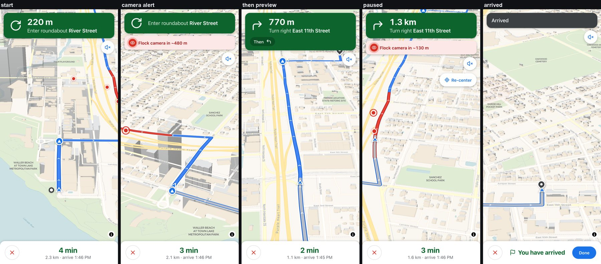
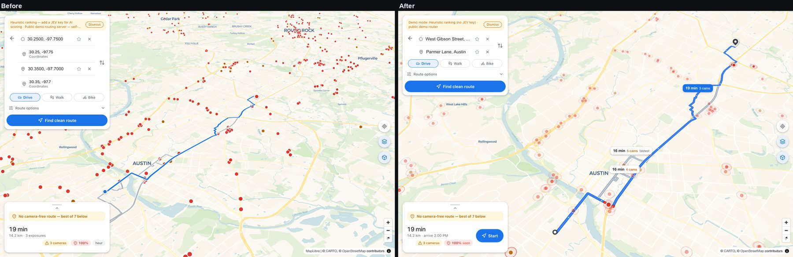
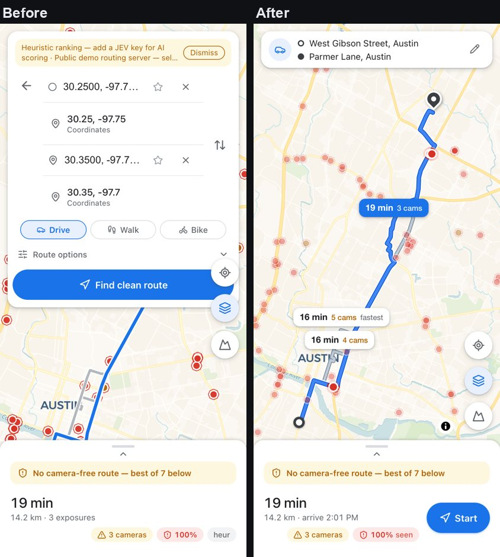
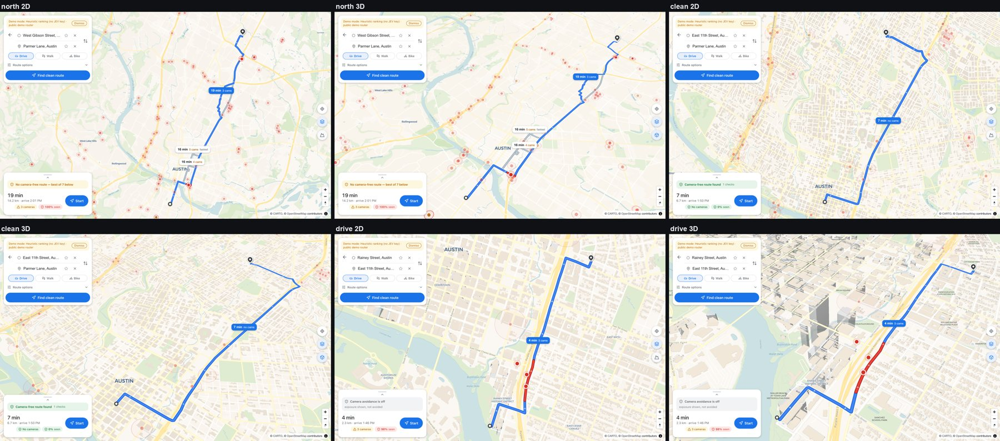
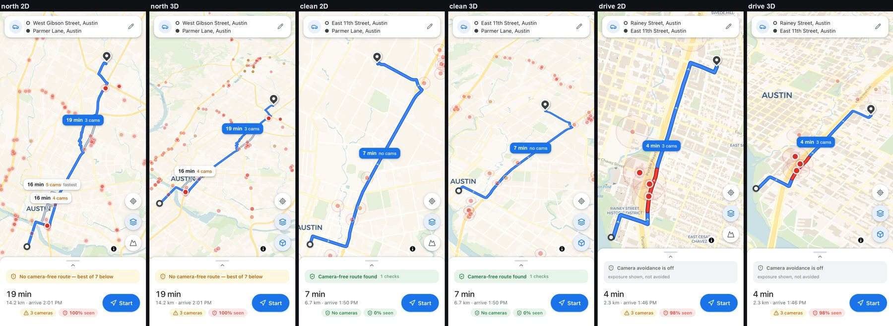
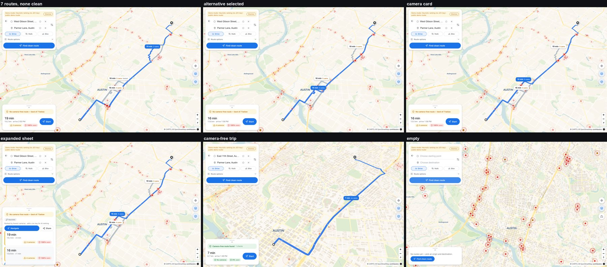
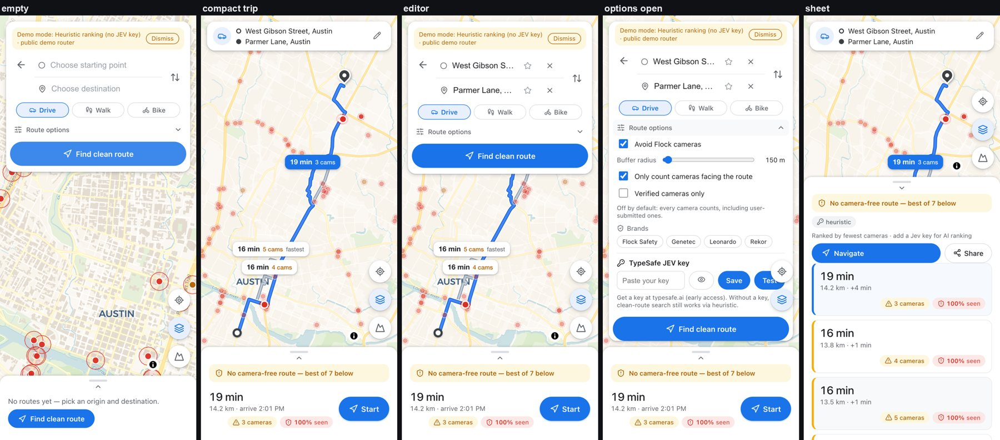

Ghost Route · blueprint · 2026-10-05 · 919ea0f + this pass (uncommitted)
Routes that read at a glance, and a phone that can drive them
Ghost Route plans driving routes around Flock ALPR cameras. This pass makes the routes themselves legible on the map, gives phone users a usable planning screen, and turns navigation into a real driving view with live distance, ETA, camera alerts and arrival.
Everything below came from local runs in Chrome 154 (Playwright, headless) on an Apple Silicon Mac against the Vite dev server and the Express API with 142,677 cameras loaded. Route plans come from three recorded /api/route fixtures, and reverse geocoding is stubbed with fixed street names. Tiles and cameras are live. The harness is in tools/blueprint/.
verify:nav)Watch it
A 390×844 phone drives the 2.3 km Rainey Street → East 11th Street fixture route. The emulated GPS reports position only (no heading, no speed), which is what most phone browsers give a web page. Partway through, the harness drags the map away, taps Re-center, and then leaves the road to force a reroute.
tools/blueprint/navigation.mjs in real Chrome. Time is compressed: one 30 m fix every 0.45 s.
Routes that read at a glance
new in this passBefore this pass every candidate route was drawn as a 4–5 px line. A trip with no camera-free option drew seven of them over a city-wide scatter of camera dots, and the destination pin was the same red as a verified camera.

How it works
pickDrawnRoutesinclient/src/lib/routeStyle.tsdraws the selected route plus the two best-ranked alternatives. All of them stay in the sheet.- The selected route is three zoom-scaled layers (white halo, dark-blue edge, blue fill: 4 px at z10 up to 14 px at z18) with white direction chevrons.
syncRouteLayersinserts every route layer beneath the camera dots, then redraws the route's own exposed cameras on top. exposureRunsdensifies the polyline and paints the stretches inside the avoidance buffer of each exposed camera in red. This shows where a trip is seen, not just how many times.labelAnchorsplaces each route's chip on the part of the route that is its own, far from the other drawn routes. A screen-space pass hides a lower-ranked chip that still collides, for example in a tilted phone view, and re-runs after every move.- Tapping an alternative's line or chip selects it. The hit test checks cameras and lines together, so a tap on a line near a camera still selects the line, and neither kind of tap moves an endpoint.
- The fit uses the panels' live rectangles (
getFitPaddinginApp.tsx) plus 40 px of headroom for the pin. Under a tilt it fits by measurement:fitLineprojects the line at the candidate camera and corrects zoom and centre twice before animating. MapLibre's corner-based fit had left a long trip filling a third of the screen at 60°. The 3D tilt is now 45°, and toggling it refits.
Planning on a phone
new in this passOn a 390 px screen the full directions card stayed open with routes up. Together with the sheet it left about a quarter of the screen for the map. Navigate sat below all seven route cards, and the floating buttons overlapped the Find button.

How it works
TripSummary.tsxreplaces the editor on screens under 1024 px once routes are shown. Tapping it brings the full card back. A result never collapses an editor the user has touched since that request started.- The sheet's height is measured into
--gm-sheet-h. The floating buttons, the map controls and the card's max-height are all derived from it, so Find stays reachable with route options open. - Map taps and shared links resolve to street names through Nominatim reverse geocoding (
reverseGeocodeingeocode.ts). Photon's reverse endpoint sends no CORS header, so the browser cannot call it. Suggestion lists open only for text the user is typing. - The peek shows arrival clock time and a 48 px Start button. In the expanded sheet, Navigate and Share sit above the route list. The repeated "heur" pill and the ellipsized "+4 …" times are gone.
Route matrix
Three recorded trips, each on a desktop and a phone, in 2D and 3D: 12 frames, each measured rather than only captured. "In view" is the share of the selected route's vertices inside the unobstructed map area, between or beside the panels. "Fill" is how much of that area the route spans, by the larger of its width or height share.


| Frame | In view | Endpoints | Fill | Chips shown | Chip clashes | Line drawn | Pitch | Zoom |
|---|---|---|---|---|---|---|---|---|
desk-north-2d | 100% | 2/2 | 81% | 3/3 | 0 | 100% | 0° | 12.1 |
desk-north-3d | 100% | 2/2 | 76% | 3/3 | 0 | 100% | 45° | 12.8 |
desk-clean-2d | 100% | 2/2 | 81% | 1/1 | 0 | 100% | 0° | 13.4 |
desk-clean-3d | 100% | 2/2 | 77% | 1/1 | 0 | 100% | 45° | 14 |
desk-drive-2d | 100% | 2/2 | 81% | 1/1 | 0 | 100% | 0° | 14.9 |
desk-drive-3d | 100% | 2/2 | 81% | 1/1 | 0 | 100% | 45° | 15.6 |
phone-north-2d | 100% | 2/2 | 84% | 3/3 | 0 | 100% | 0° | 11.5 |
phone-north-3d | 100% | 2/2 | 78% | 1/2 | 0 | 100% | 45° | 11.5 |
phone-clean-2d | 100% | 2/2 | 84% | 1/1 | 0 | 100% | 0° | 12.8 |
phone-clean-3d | 100% | 2/2 | 78% | 1/1 | 0 | 100% | 45° | 12.5 |
phone-drive-2d | 100% | 2/2 | 83% | 1/1 | 0 | 100% | 0° | 14.3 |
phone-drive-3d | 100% | 2/2 | 78% | 1/1 | 0 | 100% | 45° | 14 |
The first matrix run failed three of these checks. Tilting to 3D left up to 8.2% of the route and the destination pin off a phone screen, and two chips collided in the tilted phone view. Looking at the frames also showed that the 60° desktop tilt shrank a long trip to about a third of the screen. All three are fixed; see the table below.
Architecture
One React app state feeds a MapLibre map and three overlay panels. Navigation is a pure geometry module plus one shared GPS watch, so the banner, trip bar and map all act on the same fix.
flowchart LR GPS["Phone GPS
watchPosition"] --> GEO["useGeoPosition"] GEO --> NAV["useNavigation
snap · heading · steps · ETA"] NAV --> PURE["navigate.ts
projectOnRoute · routeBearingAt"] APP["App.tsx
trip state · fit padding"] --> NAV APP --> MAP["MapView
route layers · chips · puck · driving camera"] STY["routeStyle.ts
drawn routes · camera zones · label anchors"] --> MAP NAV --> HUD["NavigateBanner + NavTripBar"] APP --> PLAN["TripSummary · DirectionsCard · RouteSheet"] APP -- "POST /api/route" --> API["Express API"] API --> OSRM["OSRM (public demo)"] API --> CAM["camera store
142,677 cameras"] API --> CLEAN["clean-route search + scoring"] PLAN -- "search / reverse" --> GEOC["Photon · Nominatim"]
Route looknew
client/src/lib/routeStyle.tsPure helpers: which routes to draw, camera-zone runs along a densified polyline, label anchors that avoid other routes. Covered by unit tests.
Mapreworked
client/src/components/MapView.tsxRoute layers beneath the camera dots, chips with screen-space declutter, a unified tap hit test, panel-aware fit with pitch, the driving camera and the heading puck. Layer updates wait for the style to load instead of being dropped.
Navigation stateextended
client/src/lib/useNavigation.tsAdds the snapped puck with a fallback heading, distance and time left, the following step, and arrival by distance to the route end.
Navigation HUDnew
NavigateBanner.tsx · NavTripBar.tsxManeuver card, "Then" preview, camera strip, voice and Re-center buttons, and a trip bar with ETA, exit and Done.
Phone planningnew
TripSummary.tsx · App.tsxCompact trip summary, the sheet height as a CSS variable, editor collapse that respects interaction, the wake lock, and the window.__ghost dev hook.
Instructions
server/src/services/osrm.tsDeparture uses the compass bearing from bearing_after. Arrival names the street and the side.
Tour


Test results
Four layers. 390 unit tests (vitest; server, API contract and client logic). The repo's existing CDP navigation check (scripts/verify-nav-browser.mjs, 81/81 after two intentional updates). And three blueprint scripts that drive the real app in Chrome, one check per promise.
| Area | Check | Measured | Result | Script |
|---|---|---|---|---|
| Planning UI | Idle Find button shows no loading spinner | {"disabled":true,"content":"none","anim":"none"} | pass | sweep |
| Planning UI | Shared link resolves both endpoints to street names | West Gibson Street, Austin → Parmer Lane, Austin | pass | sweep |
| Planning UI | No suggestion list opens without the user typing | {"lists":0,"focus":"BODY"} | pass | sweep |
| Route look | Map draws the selected route + at most 2 alternatives (of 7) | alts=2, routes=7 | pass | sweep |
| Route look | Camera dots render above the route line, exposed cameras above all | fill@102 cams@106 exposed@108 | pass | sweep |
| Route look | Camera zones painted on the selected route (it has 3 exposures) | pass | sweep | |
| Route look | Direction arrows drawn along the selected route | pass | sweep | |
| Route look | One label chip per drawn route, none overlapping | 19 min3 cams | 16 min4 cams | 16 min5 camsfastest | pass | sweep |
| Layout | Desktop: fitted route lies in the map area right of the panel | 100.0% of 388 vertices | pass | sweep |
| Planning UI | Start button visible and clickable without opening the sheet | {"visible":true,"onTop":true,"enabled":true} | pass | sweep |
| Route look | Tapping an alternative's chip selects that route | clean-r1-0 → clean-r2-2 | pass | sweep |
| Route look | Tapping an alternative line selects it (and moves no endpoint) | → clean-r3-4 | pass | sweep |
| Planning UI | Tapping a camera opens its card without moving an endpoint | {"popup":true,"o":"West Gibson Street, Austin","d":"Parmer Lane, Austin"} | pass | sweep |
| Route look | Endpoints don't share a camera dot's colour (pin + hollow ring) | {"pinBg":"rgb(60, 64, 67)","originBg":"rgb(255, 255, 255)"} | pass | sweep |
| Planning UI | Demo-mode notice is readable in full (no ellipsis) | Demo mode: Heuristic ranking (no JEV key) · public demo router | pass | sweep |
| Planning UI | Expanded sheet shows Navigate without scrolling past the list | {"navInView":true,"truncated":0,"cards":7,"heur":0} | pass | sweep |
| Planning UI | Route cards show full time/distance (no ellipsis) | 0/7 truncated | pass | sweep |
| Planning UI | No jargon 'heur' pill repeated on every card | 0 cards | pass | sweep |
| Route look | Camera-free route: 'no cams' chip and no red zones | {"chip":"7 minno cams","zones":false} | pass | sweep |
| Phone | Routes shown → directions collapse to a two-line summary | card height 58px | pass | sweep |
| Phone | At least half the screen is unobstructed map | 70% | pass | sweep |
| Phone | Fitted route lies between the top card and the sheet | 100.0% of 388 vertices | pass | sweep |
| Phone | Floating buttons clear the top card and the sheet | clear | pass | sweep |
| Phone | Map attribution stays visible above the sheet | attrib bottom 649 / sheet top 659 | pass | sweep |
| Phone | Start button in the peek, thumb-sized (≥44px) | {"inView":true,"h":48} | pass | sweep |
| Phone | Tapping the summary reopens the full trip editor | pass | sweep | |
| Phone | With route options open, Find stays reachable above the sheet | clear | pass | sweep |
| Phone | Back returns to the compact summary | pass | sweep | |
| Phone | No sideways scroll at 390px | pass | sweep | |
| Health | No console errors or page exceptions | pass | sweep | |
| Matrix | Whole selected route in the unobstructed map (all 12 frames ≥ 95%) | worst 100% | pass | routes |
| Matrix | Route fills the free map (spans ≥ 60% of its width or height) | worst 76%, 81/76/81/77/81/81/84/78/84/78/83/78 | pass | routes |
| Matrix | Both endpoint markers visible in every frame | all 2/2 | pass | routes |
| Matrix | Visible label chips never overlap each other | 0 clashes | pass | routes |
| Matrix | The selected route's chip is always shown | all frames | pass | routes |
| Matrix | Label chips stay clear of the panels | all clear | pass | routes |
| Matrix | Selected line rendered under its own vertices (≥ 90% of probes) | worst 100% | pass | routes |
| Matrix | 3D frames are pitched, 2D frames flat | pass | routes | |
| Health | No console errors or page exceptions | pass | routes | |
| Start | Start enters navigation from the peek in one tap | pass | navigation | |
| Start | Driving view: maneuver card + trip bar; sheet, FABs and route chips hidden | {"card":true,"bar":true,"sheet":false,"fabs":false,"toggle":false,"chips":0} | pass | navigation |
| Start | Screen wake lock requested so the phone does not sleep mid-drive | pass | navigation | |
| Camera | Map tilts into a driving perspective (pitch ≥ 40°) | pitch 50.0° | pass | navigation |
| Camera | Puck sits low on screen, looking ahead (lower 40%) | y=599/844 | pass | navigation |
| Camera | Heading known with no device heading (from the road) | heading 17°, first leg 17° | pass | navigation |
| Guidance | Trip bar shows time left, distance left and arrival clock | 4 min2.3 km · arrive 1:46 PM | pass | navigation |
| Camera | Dragging the map pauses follow and shows Re-center | pass | navigation | |
| Camera | Re-center resumes the driving view on the puck | puck y=599 | pass | navigation |
| Reroute | Leaving the route triggers exactly one reroute request | 1 request(s) | pass | navigation |
| Reroute | Off-route fixes surface 'Rerouting…' (or the new plan lands first) | landed before a frame was sampled | pass | navigation |
| Reroute | Reroute plans from the live fix, not the planned origin | 30.2656,-97.7320 | pass | navigation |
| Camera | Computed heading tracks the road (≤25° on ≥90% of fixes) | 95% of 38, median 0.1° | pass | navigation |
| Camera | Map rotates with travel (median map-vs-heading gap ≤ 20°) | median 1.5° | pass | navigation |
| Camera | Driving tilt held for the whole drive | min 50.0° | pass | navigation |
| Camera | Puck stays in the lower part of the screen while following | 100% of fixes | pass | navigation |
| Guidance | Distance left only goes down while on route | 41 fixes, 0 increases; 2274 → 1074 m | pass | navigation |
| Guidance | Time left counts down with distance | 219 s → 103 s | pass | navigation |
| Guidance | Distance left matches the true distance to go (±60 m) | 100% of fixes | pass | navigation |
| Guidance | Maneuver card walks through the turns in order | River Street → North Interstate 35 → East 11th Street → Curve Street | pass | navigation |
| Guidance | 'Then' preview appears for back-to-back turns | pass | navigation | |
| Guidance | Next-turn chevron marks the upcoming maneuver on the map | pass | navigation | |
| Cameras | Flock camera alert fires before the first camera is reached | alert at fix 8, camera at fix 24: "Flock camera in ~480 m" | pass | navigation |
| Cameras | Alert clears once every camera is behind | last camera at fix 30 | pass | navigation |
| Cameras | Camera zones stay painted on the route while driving | pass | navigation | |
| Arrival | Arriving shows 'You have arrived' with a Done button | You have arrivedDone | pass | navigation |
| Arrival | Done returns to the planning view with the route sheet | pass | navigation | |
| Arrival | Leaving navigation drops the tilt and look-ahead padding | pitch 0.0°, padding top 0 | pass | navigation |
| Arrival | GPS watch stops when navigation ends | pass | navigation | |
| Health | No console errors or page exceptions | pass | navigation |
Performance
| Measure | Value | How it was measured |
|---|---|---|
| Frame rate while driving | 60 fps | requestAnimationFrame count over the whole 78-fix drive: tilted 3D view, buildings, easing every fix (navigation.mjs). |
| Frame rate rotating the planning map in 3D | 60 fps | rAF count during a 2 s, 90° bearing ease with 7 routes, about 1,000 camera dots and the chips up (sweep.mjs). |
| Shared link to drawn routes | 2,609 ms | Navigation to a #r= link until 7 routes are in app state and the fit animation has settled. The route API is a fixture, so this is client time plus the 800 ms endpoint debounce. |
| App ready (map style loaded) | 832 ms | From page.goto to __grMap.isStyleLoaded() on a warm dev server. |
| JS heap after the desktop sweep | 52.2 MB | performance.memory.usedJSHeapSize. |
| Unobstructed map on a phone with routes up | 70% | The area between the top card and the sheet, over the 390×844 viewport. Before: about 25%, measured on the baseline screenshot. |
| Production bundle | 1.30 MB (364 kB gz) | vite build, one chunk, mostly MapLibre. Vite warns that it is over 500 kB. |
Fixed in this pass
Everything a user would see, found by looking at the baseline screenshots or by a failing check, with the cause traced in code.
| Issue | Cause | Fix |
|---|---|---|
| Arrival never fired on real routes: the banner sat at "0 m" at the destination | OSRM's final "arrive" step is zero-length, and the step before it stays inside the 60 m lock radius, so the lock never reached the last step | Also arrive when the snapped fix is within 40 m of the route end (useNavigation.ts) |
| The nav map rotated only when the phone reported a compass heading | Bearing came straight from coords.heading, which is null on most phone browsers at low speed | Fall back to the road's bearing at the snapped point, then to movement between fixes |
| Imminent-camera ring (and route layers) sometimes not drawn | Updates were guarded by isStyleLoaded(), which is false while any source loads, and were dropped rather than retried | whenStyleReady: apply once the style has loaded |
| Seven thin route lines; cameras on the route hidden under it | Every route drawn at a fixed 4–5 px, added above the camera layer | Selected + 2 alternatives, zoom-scaled 3-layer line, layers beneath cameras, exposed cameras on top |
| Destination looked like a verified camera; origin looked like the live-position dot | Red and blue filled circles | Dark teardrop pin and a hollow ring |
| Suggestion lists popped open over the map on shared links and map taps | The debounced search ran on any value change and opened the list without focus | Search and open only while the field has focus; a picked label is not re-queried |
| Idle, disabled Find button showed a loading spinner | Spinner CSS keyed on :disabled | Keyed on aria-busy |
| Navigate sat below every route card | Actions rendered after the list | Start in the peek; Navigate and Share above the list |
| Phone: map about 25% visible with routes up | The full editor stayed open | Compact two-line trip summary: 70% |
| Phone: floating buttons overlapped Find and the top card; attribution under the sheet | Fixed at top: 50% and the map's bottom-right corner | Anchored above the measured sheet height |
| Phone: Find hidden behind the sheet with options open | Card max-height assumed a 220 px sheet | Max-height derived from --gm-sheet-h |
| A route landing collapsed the editor while the user was changing options | Collapse on every planned result | Collapse only if the editor was untouched since the request started |
| Route fitted under the panels | Even 60 px fit padding | Padding from the panels' live rectangles plus pin headroom |
| 3D toggle pushed up to 8.2% of the route and the pin off a phone screen | The toggle tilted without refitting | Refit on every tilt change |
| In 3D a long trip spanned only about a third of the free screen (310 of 900 px) | A 60° tilt foreshortens north–south lines, and the corner-based fit does not zoom in to compensate | 45° tilt plus fitLine: project, then correct zoom and centre. Desktop 3D zoom went from 12.0 to 12.8 on the same trip. |
| Two route chips overlapped in the tilted phone view | Anchors are spread on the ground, but perspective compresses distance | Screen-space declutter after every move |
| A tap on an alternative near a camera did nothing; a camera tap could move an endpoint | Cameras were tested first with an 8 px box; the old click handler had no hit test (from code reading) | One hit test: the exact-point feature wins, the box catches near misses on lines only |
| Look-ahead padding persisted after leaving navigation | The route refit interrupted the padding ease | setPadding at once on exit |
| "Head left onto Rainey Street", "Arrive at destination onto Curve Street" | OSRM's depart modifier is relative to a heading the driver doesn't have yet | Compass from bearing_after; "Arrive at Curve Street, destination on the right" |
| Coordinates as place names ("30.2500, -97.75…") | No reverse geocoding | Nominatim reverse (Photon /reverse has no CORS) |
| Demo-mode notice truncated with "…"; "heur" pill on every card; card times cut to "+4 …" | Line clamp, per-card fallback chip, nowrap subline | Shorter copy that wraps; chip removed (stated once in the header); cards wrap |
scripts/verify-nav-browser.mjs went stale against the new phone flow | It expected a flat nav view and the full card after navigation | Updated for the tilt and the trip summary. It also hit an orphaned Vite on port 5199 from an earlier run; the run commands now clear the port. |
Roadmap
Ranked by how much each item helps someone actually drive a camera-avoiding route on a phone. Size: S under half a day, M 1–2 days, L most of a week.
P1 · Prove it in a car do next
P1-1 · Real-phone drive over HTTPS
- Evidence
- All 30 navigation checks used emulated GPS.
useGeoPositionnow refuses insecure origins, so a LAN dev server cannot be driven at all. - Approach
- Deploy a preview (Vercel or a Cloudflare tunnel to
vite --host) and drive one short loop on iOS Safari and Android Chrome with voice on. Record fix rate, accuracy and heading availability, then tuneSNAP_MandOFF_ROUTE_Mfrom the data. - Size
- S
P1-2 · Time-based camera alerts
- Evidence
- A fixed 500 m window (
CAMERA_ALERT_M) is about 15 s at highway speed and a minute in town. - Approach
- Alert at about 20 s ahead using
speedMps(or the route's own step speeds when GPS speed is null), with 300 m as the floor. - Size
- S
P1-3 · Smooth the puck between fixes
- Evidence
- Phones deliver about 1 fix per second, and the puck jumps from one to the next (the video compresses this).
- Approach
- Dead-reckon along the route at the last speed in a rAF loop, snapped with
projectOnRoute, and correct on each fix. - Size
- M
P2 · Driving comfort after a real drive
P2-1 · Lane and exit guidance
- Evidence
- The I-35 step reads "Turn left onto North Interstate 35" with no lane or ramp hint.
- Approach
- Carry OSRM
intersections[].lanesand exit numbers intoRouteStep(additive) and draw lane arrows in the maneuver card. - Size
- M
P2-2 · Night map style
- Evidence
- The Voyager basemap is bright and stays light in a dark car.
- Approach
- Switch to CARTO Dark Matter when
prefers-color-schemeis dark or after sunset during navigation; re-tune the route palette for it. - Size
- M
P2-3 · Split the 1.3 MB bundle
- Evidence
vite buildwarns: one 1,298 kB chunk.- Approach
- Lazy-load MapLibre behind the shell and split the options/BYOK panel out; measure time to first map on a throttled phone profile.
- Size
- S
P3 · Beyond the browser when the web limits bite
P3-1 · Background guidance
- Evidence
- A web page loses GPS when the tab is hidden; the wake lock only prevents sleep.
- Approach
- Wrap in Capacitor with a background-location plugin, keeping the same React app and
useNavigation. - Size
- L
P3-2 · Offline trip pack
- Evidence
- A reroute needs the network, and tiles stream live.
- Approach
- Prefetch the route corridor's tiles and the trip's cameras into a service-worker cache when navigation starts.
- Size
- M
Run & reproduce
npm install npm run dev:server & # API on :8801 (loads 142,677 cameras) npm run dev:client & # app on :5174 npm test && npm run typecheck && npm run build # blueprint harness: one after another, never in parallel for s in sweep routes navigation; do node tools/blueprint/$s.mjs || echo "$s FAILED"; done lsof -tiTCP:5199 -sTCP:LISTEN | xargs kill 2>/dev/null; npm run verify:nav node tools/blueprint/rows.mjs docs/blueprint/ghost-route-blueprint.html # refresh the tables # drive it on a real phone (location needs HTTPS) npx vite --host --port 5174 --config client/vite.config.ts & cloudflared tunnel --url http://localhost:5174 # open the https URL on the phone
Raw evidence lands in blueprint-out/ (gitignored): ui/, render/, nav/, video/, and data/report-*.json plus nav-trace.json with every fix's heading, bearing and distances.